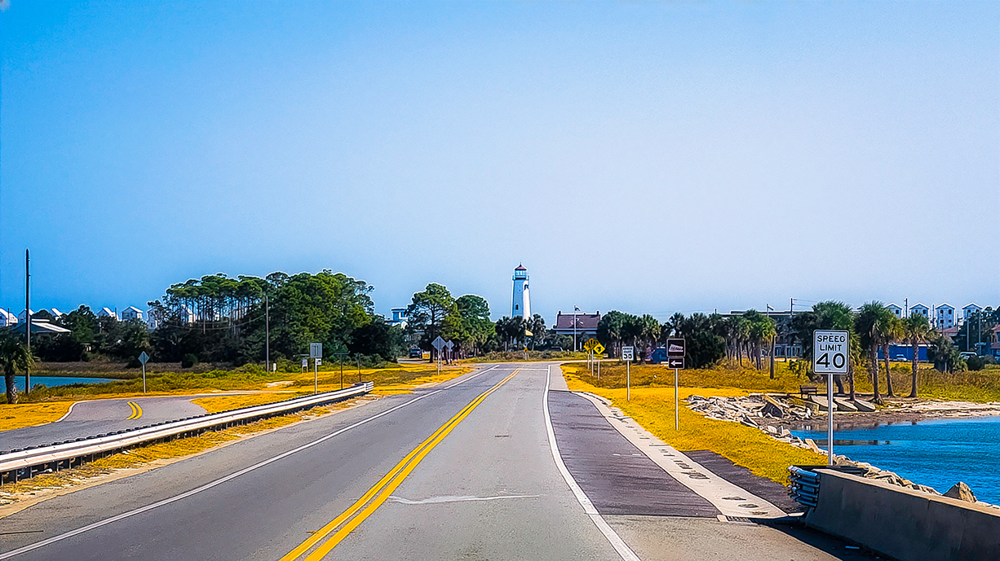

1A. St. George Lighthouse (RAW)
The uncompressed file captured flat midtones, hazy background definition, and muted sky contrast due to intense ambient coastal glare.
A visual study exploring asset enhancement, RAW exposure balancing, and color grading workflows across landscape environments.
Capturing complex natural lighting environments frequently introduces exposure challenges, ranging from blown-out coastal highlights to deeply under-exposed mountain terrain shadows. This series treats image enhancement as a structured technical workflow: converting uncompressed digital assets into vibrant, balanced visual compositions while maintaining environmental authenticity.
The post-processing framework isolates adjustments across three target segments: tonal dynamic range restoration, local color contrast adjustments, and precision sharpening. The resulting portfolio showcases the transformation from flat sensor data to idealized atmospheric profiles.
The uncompressed file captured flat midtones, hazy background definition, and muted sky contrast due to intense ambient coastal glare.

Corrected via selective luminance masking, pulling back sky highlights to reveal cloud structures while applying subtle warmth to the structure.

Initial image details were obscured by harsh midday shadows across the valley terrain, combined with an over-saturated horizon line.

Shadow depths were recovered by +1.5 stops, and localized dodging and burning was applied to enhance the dramatic, stormy atmosphere across the plains.

The original mountain layout lacked tonal depth. Forest greens appeared muddy and mountain peaks blended into the overcast background.

Introduced target split-toning to enrich shadow depth, used a polarizing curve map to separate foliage layers, and optimized clarity parameters.